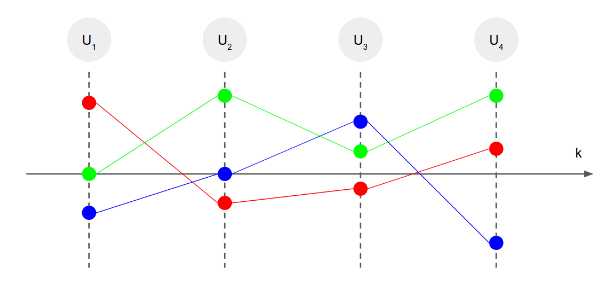
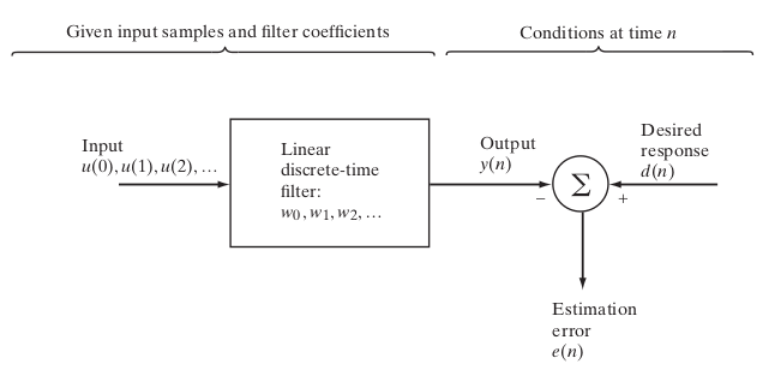

%matplotlib notebook
import numpy as np
import scipy.signal
import scipy.fft as sfft
import matplotlib.pylab as plt
from matplotlib import animation
from IPython.display import YouTubeVideo, HTML, Audio
from bokeh.layouts import column, row
from bokeh.models import CustomJS, ColumnDataSource, Slider
from bokeh.plotting import Figure, show, output_notebook
from bokeh.palettes import Dark2_5 as palette
output_notebook()
1. Estimador lineal óptimo¶
1.1. Definiciones y fundamentos¶
Estimador: Sistema diseñado para extraer información a partir de una señal
La señal contiene información y ruido
La señal es representada como una secuencia de datos
Tipos de estimador
Filtro: Estimo el valor actual de mi señal acentuando o eliminando una o más características
Predictor: Estimo el valor futuro de mi señal
Estimador lineal óptimo
Lineal: La cantidad estimada es una función lineal de la entrada
Óptimo: El estimador es la mejor solución posible de acuerdo a un criterio
1.1.1. Proceso aleatorio o proceso estocástico¶
Un proceso estocástico es una colección de variables aleatorias indexadas tal que forman una secuencia
Se denotan matematicamente como un conjunto \(\{U_k\}\), con \(k=0, 1, 2, \ldots, N\). El índice \(k\) puede representar tiempo, espacio u otra variable independiente
La siguiente figura muestre tres realizaciones u observaciones de un proceso estocástico con cuatro elementos
{kind=link}
Se usan para modelar la evolución de un fenomeno estadístico en el tiempo donde el fenomeno se rige por leyes probabilísticas
1.1.1.1. Momentos de un proceso estocástico¶
Un proceso aleatorio \(U_n = (u_n, u_{n-1}, u_{n-2}, \ldots, u_{n-L})\) se describe a través de sus momentos estadísticos
Si consideramos una caracterízación de segundo orden necesitamos definir
Momento central o media: Describe el valor central del proceso
Segundo momento o correlación: Describe la dispersión de un proceso
Segundo momento centrado o covarianza
Correlación cruzada entre dos procesos
1.1.1.2. Proceso estocástico estacionario¶
En general consideraremos el caso simplificado donde el proceso es estacionario
y
es decir que los momentos estadísticos se mantienen constantes en el tiempo (no depende de \(n\))
Otra simplificación es que el proceso sea ergódico
es decir podemos reemplazar el valor esperado por la media muestral en el tiempo
1.1.1.3. Densidad espectral de potencia¶
Otra cantidad de interés es la PSD (power spectral density) que mide la distribución de la potencia en frecuencia
que corresponde a la transformada de Fourier de la correlación (caso estacionario)
La PSD y la correlación forman un par de Fourier
1.1.2. Estimadores óptimos¶
Definición de Óptimo: adjetivo. Sumamente bueno, que no puede ser mejor.
Para diseñar un estimador óptimo necesitamos un criterio
Luego el estimador será óptimo según dicho criterio
Usualmente también consideramos supuestos
Por ejemplo podríamos asumir que
el ruido es aditivo y blanco o que tiene una cierta covarianza conocida
conocemos la media y covarianza de la señal
el proceso es estacionario
1.2. Filtro de Wiener¶
Este filtro fue publicado por Norbert Wiener en 1949. Es un filtro de tiempo discreto con estructura FIR y \(L+1\) coeficientes: \(h_0, h_1, h_2, \ldots, h_{L}\)
La entrada al filtro es una señal \(u_0, u_1, u_2, \ldots\)
Para cada tiempo el filtro produce una salida \(y_0, y_1, y_2, \ldots\)
Los coeficientes del filtro se aprenden en base a dos ingredientes
Una respuesta «deseada» u objetivo \(d_0, d_1, d_2, \ldots\)
Un criterio de optimalidad que opera sobre el error entre la respuesta deseada y la salida
Diagrama del filtro de Wiener
{kind=link}
1.2.1. Ajuste del filtro de Wiener¶
El criterio más común para aprender o adaptar el filtro de Wiener es el error medio cuadrático entre la respuesta deseada y la salida del filtro
Asumiendo que \(u\) y \(d\) son secuencias de valores reales podemos escribir el MSE como
donde \(\sigma_d^2 = \mathbb{E}\left [d_n^2 \right]\) es la varianza de la señal deseada y \(\sigma_y^2 = \mathbb{E}\left [ y_n^2 \right]\) es la varianza de nuestro estimador
Minimizar el MSE implica acercar la salida del filtro a la respuesta deseada
En este caso, igualando la derivada del MSE a cero, tenemos
Si despejamos y repetimos para \(j=0, \ldots, L\) obtenemos el siguiente sistema de ecuaciones
que se conoce como las ecuaciones de Wiener-Hopf. Además \(R_{uu}\) se conoce como matriz de auto-correlación.
Asumiendo que \(R_{uu}\) es no-singular, es decir que su inversa existe, la solución óptima en el sentido de mínimo MSE es
En general \(R_{uu}\) es una matriz definida-positiva (su inversa existe) y el sistema puede resolverse en \(\mathcal{O}(L^2)\) usando la recursión de Levison-Durbin
1.2.2. Requisitos/supuestos de este filtro¶
La salida deseada y la entrada tienen media cero, i.e. \(\mathbb{E}[d_n] = \mathbb{E}[u_n] = 0\), si esto no fuera así puede restarse antes de entrenar el filtro
La salida deseada y la entrada son estacionarias en el sentido amplio, es decir la correlación solo depende de \(m\).
1.2.3. Error mínimo del filtro de Wiener¶
Sea \(U_n = (u_n, u_{n-1}, u_{n-2}, \ldots, u_{n-L})\)
Dado que \(y_n = \textbf{h}^T U_n = U_n^T \textbf{h} \), podemos expresar el MSE como
Luego el mínimo error que se puede obtener es
1.3. Aplicaciones del filtro de Wiener¶
1.3.1. Regresión o identificación de sistema¶
En regresión buscamos encontrar los coeficientes \(h\) a partir de \((X, Y)\) tal que
donde \(X \in \mathbb{R}^{N\times D}\) son las variables dependientes (entrada), \(Y \in \mathbb{R}^N\) es la variable dependiente (salida) y \(\epsilon\) es ruido
Para entrenar el filtro
Asumimos que hemos observado N muestras de \(X\) e \(Y\)
A partir de \(u=X\) construimos \(R_{uu}\)
A partir de \(d=Y\) construimos \(R_{ud}\)
Finalmente recuperamos \(\textbf{h}\) usando \(R_{uu} ^{-1} R_{ud}\)
Con esto podemos interpolar \(Y\)
Sea por ejemplo una regresión de tipo polinomial donde encontrar \(h_k\) tal que
u = np.linspace(-2, 2, num=30)
f = 0.25*u**5 - 2*u**3 + 5*u # Los coeficientes reales son [0, 5, 0, -2, 0, 1/4, 0, 0, 0, ...]
d = f + np.random.randn(len(u))
¿Cómo cambia el resultado con L?
def train_wiener_regression(u, d, L):
U = np.ones(shape=(len(u), L))
for i in range(1, L):
U[:, i] = u**i
Ruu = np.dot(U.T, U)
Rud = np.dot(U.T, d[:, np.newaxis])
return np.linalg.solve(Ruu, Rud)[:, 0]
def interpolate_wiener(u, h):
L = len(h)
U = np.ones(shape=(len(u), L))
for i in range(1, L):
U[:, i] = u**i
return np.dot(U, h)
uhat = np.linspace(np.amin(u), np.amax(u), num=100)
L = [2, 5, 10]
p = [Figure(plot_width=600, plot_height=250, toolbar_location="below") for k in L]
for p_, L_, color in zip(p, L, palette):
fhat = interpolate_wiener(uhat, train_wiener_regression(u, d, L_))
p_.line(u, f, line_width=3, legend_label="Señal intrísinca f")
p_.scatter(u, d, color='black', line_width=3, legend_label="Señal contaminada y")
p_.line(uhat, fhat, line_width=3,
color=color, legend_label=f"Señal interpolada L={L_}")
p_.legend.location = 'bottom_right'
show(column(p))
Si \(L\) es muy pequeño el filtro es demasiado simple. Si \(L\) es muy grande el filtro se puede sobreajustar al ruido
1.3.2. Predicción¶
En este caso asumimos que la señal deseada es la entrada en el futuro
donde \(m\) es el horizonte de predicción
Se llama predicción a un paso al caso \(m=1\)
El largo del filtro \(L\) define la cantidad de muestras pasadas que usamos para predecir
Por ejemplo un sistema de predicción a un paso con \(L+1 = 3\) coeficientes:
Para entrenar el filtro
Asumimos que la señal ha sido observada y que se cuenta con \(N\) muestras para entrenar
Podemos formar una matriz cuyas filas son \([u_n, u_{n-1}, \ldots, u_{n-L}]\) para \(n=L,L+1,\ldots, N-1\)
Podemos formar un vector \([u_N, u_{N-1}, \ldots, u_{L+1}]^T\) (caso \(m=1\))
Con esto podemos formar las matrices de correlación y obtener \(\textbf{h}\)
Finalmente usamos \(\textbf{h}\) para predecir el futuro no observado de \(u\)
¿Cómo afecta \(L\) a la calidad del predictor lineal?
from numpy.lib.stride_tricks import as_strided
np.random.seed(0)
t = np.linspace(0, 10, num=200)
u = np.sin(2.0*np.pi*0.5*t) + 0.25*np.random.randn(len(t))
def train_wiener_predictor(u, L):
U = as_strided(u, [len(u)-L+1 , L+1],
strides=[u.strides[0], u.strides[0]])
Ruu = np.dot(U[:, :L].T, U[:, :L])
Rud = np.dot(U[:, :L].T, U[:, L][:, np.newaxis])
return np.linalg.solve(Ruu, Rud)[:, 0]
def predict_wiener(u_past, h, m):
L = len(h)
u_pred = np.zeros(shape=(m+L, ))
u_pred[:L] = u_past
for k in range(L, m+L):
u_pred[k] = np.sum(h*u_pred[k-L:k])
return u_pred[L:]
N = 100
L = [5, 10, 20, 40]
p = [Figure(plot_width=600, plot_height=250,
title=f"Filtro de orden {L_}", toolbar_location="below") for L_ in L]
for p_, L_ in zip(p, L):
h = train_wiener_predictor(u[:N], L_)
u_pred = predict_wiener(u[N-L_:N], h, m=100)
p_.scatter(t[:N], u[:N], color=palette[0], legend_label="Pasado")
p_.scatter(t[N:], u[N:], color=palette[1], legend_label="Futuro real")
p_.line(t[N:], u_pred, line_width=3, color=palette[2], legend_label="Futuro predicho")
p_.legend.location = 'bottom_left'
show(column(p))
El resultado es similar al caso anterior. Si \(L\) es muy pequeño el filtro es demasiado simple. Si \(L\) es muy grande el filtro se puede sobreajustar al ruido
1.3.3. Eliminar ruido blanco aditivo¶
En este caso asumimos que la señal de entrada corresponde a una señal deseada (información) que ha sido contaminada con ruido aditivo
adicionalmente asumimos que
el ruido es estacionario en el sentido amplio y de media cero \(\mathbb{E}[\nu_n] = 0\)
el ruido es blanco, es decir no tiene correlación consigo mismo o con la señal deseada
el ruido tiene una cierta varianza \(\mathbb{E}[\nu_n^2] = \sigma_\nu^2, \forall n\)
Notemos que en este caso \(R_{uu} = R_{dd} + R_{\nu\nu}\) y \(R_{ud} = R_{dd}\), luego
la señal recuperada es \(\hat d_n = h^{*} u_n\) y el filtro es
y su respuesta en frecuencia
es decir que
en frecuencias donde la \(S_{dd}(f) > S_{\nu\nu}(f)\), entonces \(H(f) = 1\)
en frecuencias donde la \(S_{dd}(f) < S_{\nu\nu}(f)\), entonces \(H(f) = 0\)